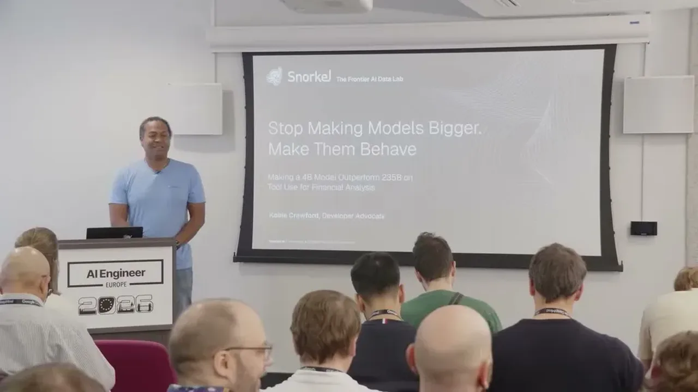
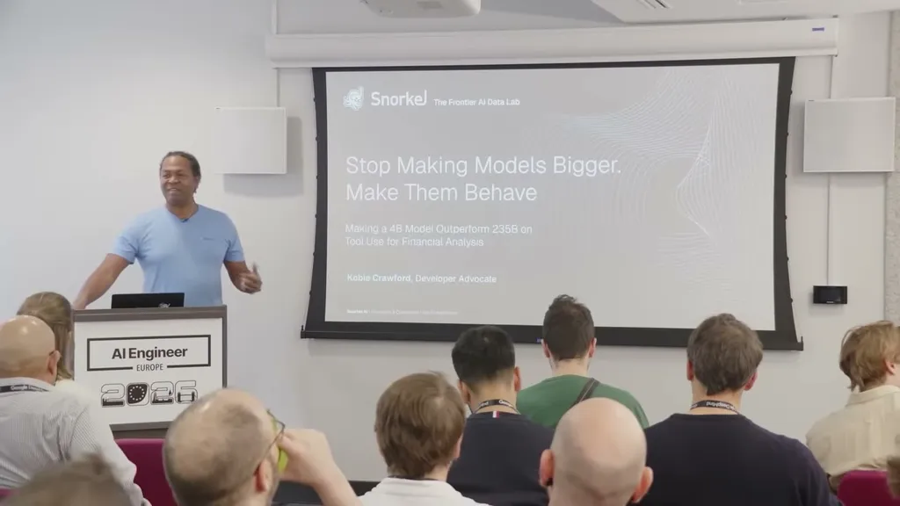
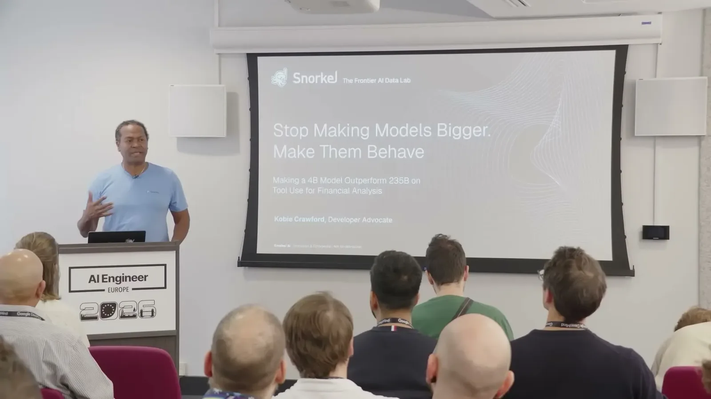
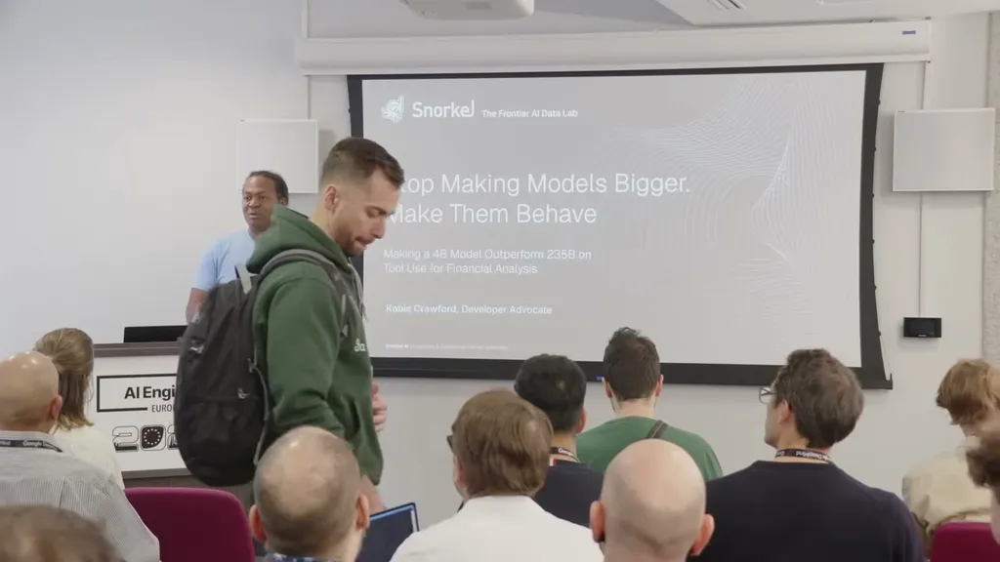
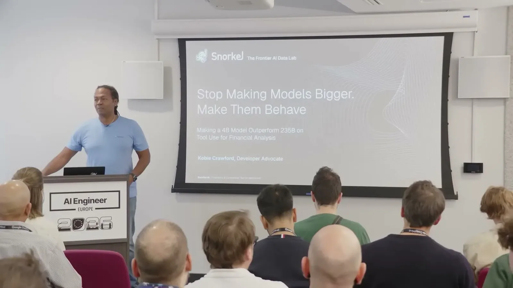
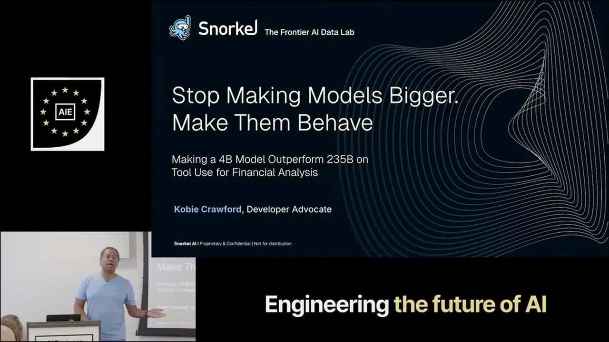
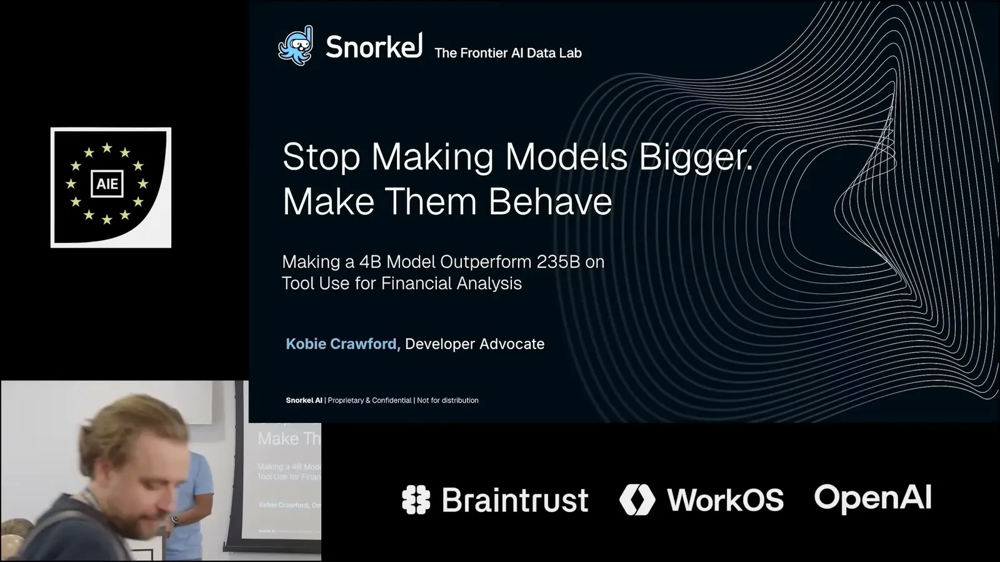
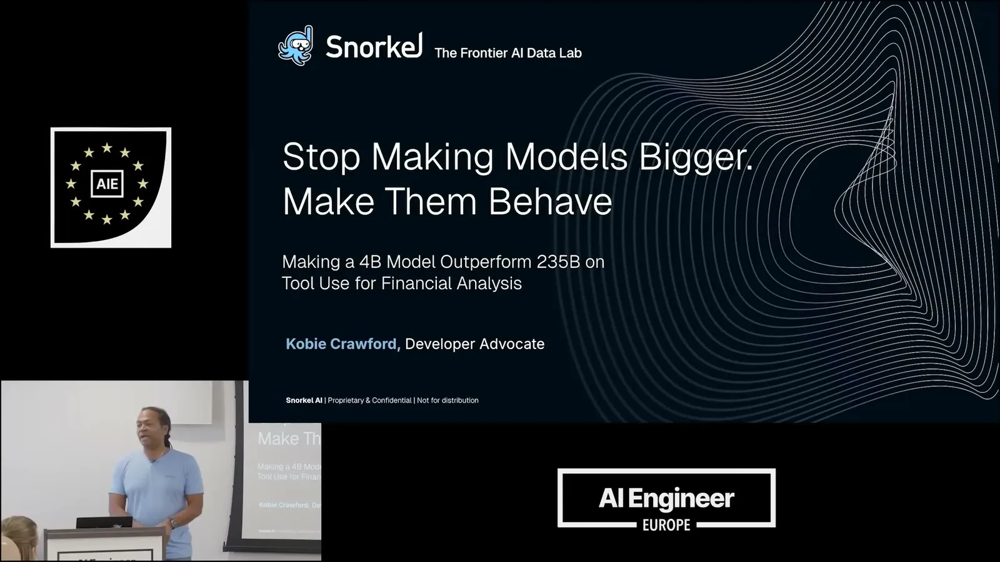
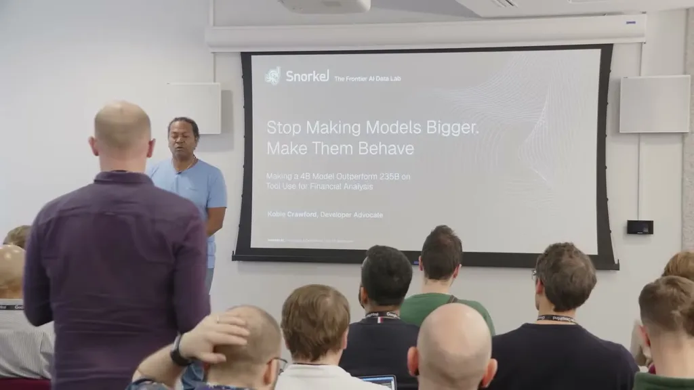
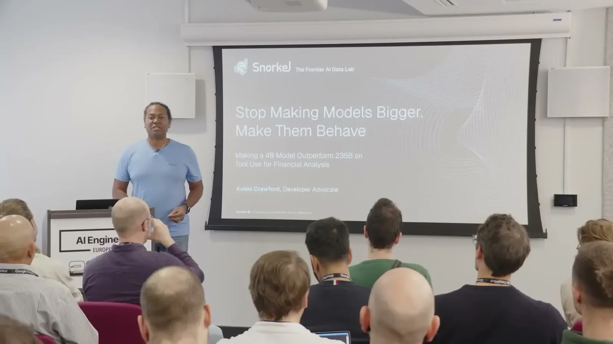

Reports a specific RL fine-tuning result -- a 4B model beating a 235B model on a financial tool-use benchmark for under $500 -- and pinpoints the fix as tool-use discipline, not reasoning depth, which is directly actionable for teams dec...
This traces the talk argument from a stalled 235B-vs-4B comparison to tool-discipline training as the fix, using only claims made in the talk; the single-table generalization result is reported as given and would benefit from independent replication (ours).
“making a 4 billion parameter model outperform outperform a 235 billion parameter model on a tool use task for financial analysis”
said at 02:38“we didn't get the performance that we wanted with this right now. We'll just drop in a larger model”
said at 04:13“having not gotten anything back in either of those two uh attempts, it falls back to just hallucinating an answer”
said at 07:48“this is something that was able to be done like in a 24 21-hour job and the total cost of running that job was under $500 per run”
said at 10:55“It's performs better than the 235 billion parameter model with that RL training loop. And the performance in terms of pass at one was essentially double of what it had been percentage-wise in terms of like solving problems”
said at 13:29“it turned out the single-table only training was actually the one that yielded the greatest uplift for these kinds of questions”
said at 16:34“the harder multi-question multi-table Q&A in the FinQA reasoning question set also saw 13.9 to 26.6 percentage jump after this training”
said at 17:36“building rubrics as part of our evals. And then those rubrics by breaking down the rightness or wrongness of a model's response into a full list of different questions that can be answered”
said at 18:37The single-table-only training regime generalizing better to multi-table questions than mixed or curriculum training is the most counterintuitive result here and worth replicating before trusting it as a general pattern -- it may be specific to how discrete the 'check tables first' behavior is versus more continuous reasoning skills (ours).










| Stance | Claim | t |
|---|---|---|
| asserts | The stated goal was making a 4B parameter model outperform a 235B parameter model on a financial-analysis tool-use task. | 02:38 |
| warns | The 235B model queried nonexistent tables twice and then hallucinated an answer instead of inspecting the schema. | 07:48 |
| warns | Teams often default to swapping in a larger model when performance falls short, which isn't always the right fix. | 04:13 |
| asserts | The RL training run took about a day and cost under $500 total. | 10:55 |
| asserts | The RL-trained 4B model outperformed the 235B model, roughly doubling pass@1 performance percentage-wise. | 13:29 |
| asserts | Training on single-table questions only produced the greatest performance uplift, beating mixed and curriculum training regimes. | 16:34 |
| asserts | The single-table-trained model's pass@1 on the harder multi-table FinQA reasoning set rose from 13.9% to 26.6%. | 17:36 |
| recommends | Break eval correctness into a rubric of individual questions to identify the specific behavior worth targeting with new training data. | 18:37 |
Machine-readable copy embedded in this page (script#ontology) and in the corpus ontology.